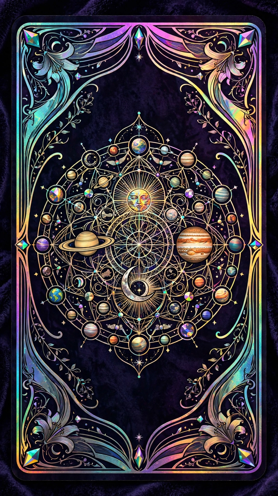

Passato · Presente · Futuro
Tre luci fisse raccontano il tuo cammino in luce della tua Carta Natale: da dove vieni, dove sei, dove vai.
Preparazione della Stesa
La tua Carta Natale
Somma giorno e mese reali al tuo anno ridotto a cifra singola; se superi le 52, sottrai 52.
Il tuo sesso
Serve alla lettura per parlarti con le parole giuste.
Passato · Presente · Futuro
La lettura viene analizzata dall'AI in luce della tua Carta Natale.

Tieni premuto sul mazzo e muovi il cursore per svelare la tua stesa Passato · Presente · Futuro in luce della Carta Natale